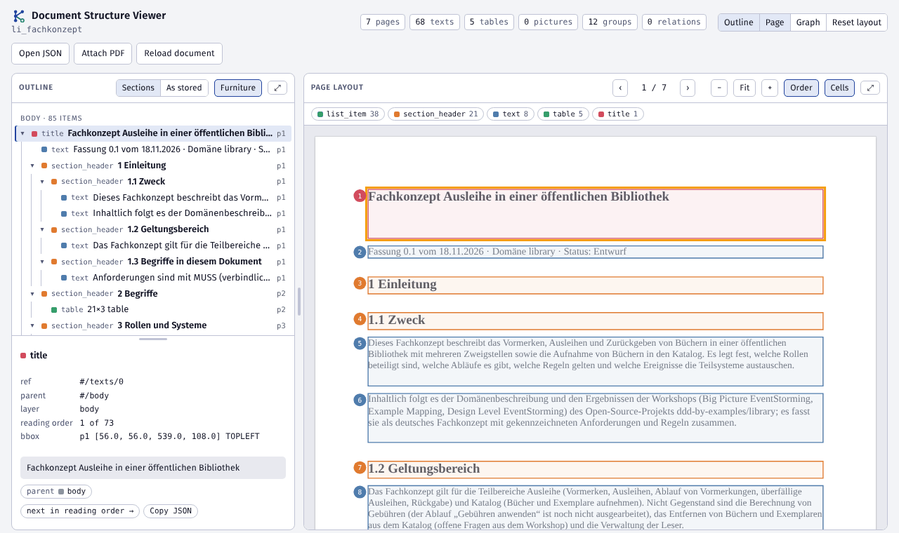
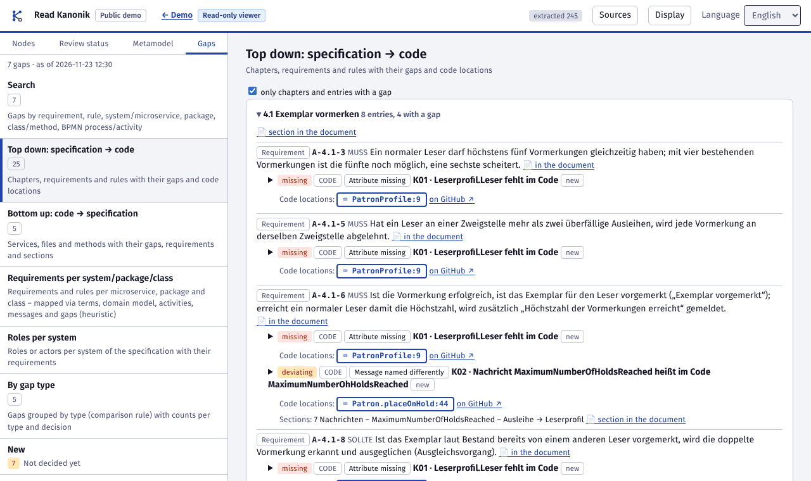
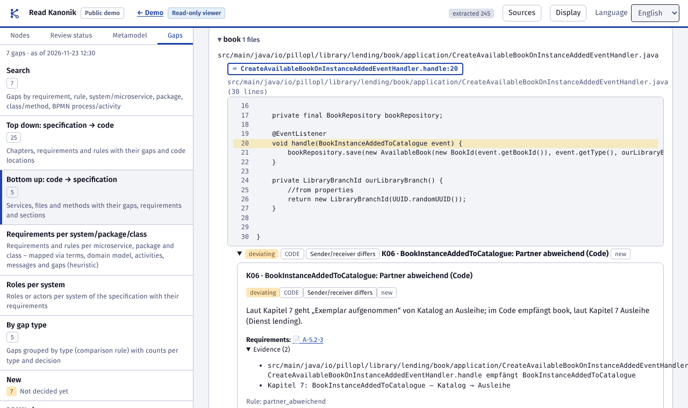

Library: lending
Holds, checkouts, returns and catalogue – specification versus a DDD domain model with aggregates and events in Java.
Source documents and findings are in German.
How this example came about
Choice
A project without BPMN but with a careful domain model: ddd-by-examples/library (Java, Spring, modular monolith, DDD with aggregates and domain events). It tests the domain side of the comparison: rules, invariants and events of the specification against aggregates and events in the code.
Preparation
We wrote and structured the specification for this demo from the project's domain description and EventStorming results: lending processes, business rules, domain model, messages. Fixed were the commit of the code and the list of expected gaps (test oracle). The language-model extraction was reviewed and accepted; every further run is repeatable without a language model.
What Kanonik did
Kanonik translated the specification into a knowledge graph and read the code: classes, aggregates, domain events raised and received (@EventListener), REST endpoints. From the code it generated an OpenAPI description (patron profile) and an AsyncAPI description of the Spring events, pointing to every place in the code. A mapping specification → code shows requirements and rules per service, package and class; the comparison yields the gap list, measured against the test oracle.
Guided tour
- The specification
Chapter 4 describes the lending processes – from placing a hold (A-4.1-1) to returning a copy; chapter 6 the business rules, chapter 8 the domain model. →
- The gaps
The comparison finds events the specification requires but the code never publishes – such as a copy being returned. →
- From finding to source
Every requirement and rule in the gap list opens the specification at its evidence. →
View the specification
Gaps
7 gaps between specification, BPMN and code
Interfaces from the code
The project has no interface description. Kanonik generated it from the source code: OpenAPI for REST, AsyncAPI for events and messages. Every element points to its place in the code (x-kanonik-code).
7 REST operations, 23 event operations, 13 messages →
Graph and search (reader)
Sources and rights
Specification written for this demo, based on the project's domain description; code from ddd-by-examples/library (MIT).